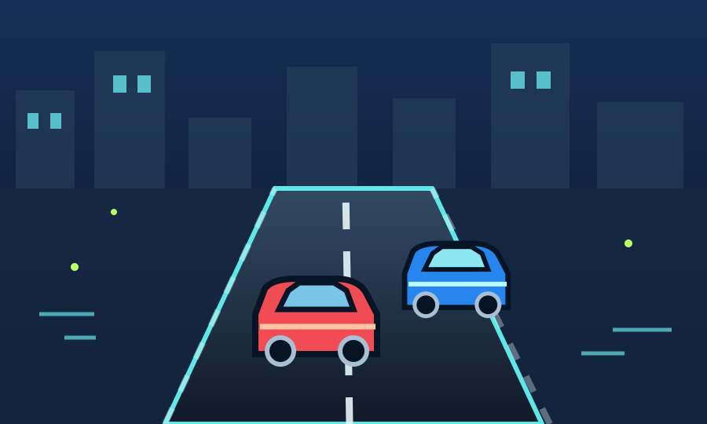

HTML5
Estructura y organización del contenido de páginas web.
Soy Jhonn, estudiante de Ingeniería en Computación en la USFQ, interesado en el desarrollo web y la creación de aplicaciones interactivas. Me motiva aprender nuevas tecnologías, resolver problemas y convertir ideas en proyectos funcionales.

Mi objetivo es seguir desarrollando mis conocimientos y aportar responsabilidad, dedicación y pensamiento lógico a cada reto.
Actualmente estudio Ingeniería en Computación en la Universidad San Francisco de Quito. A través de mis proyectos académicos he trabajado con páginas web, lógica de programación, interactividad y comunicación entre usuarios en línea.
Me considero una persona responsable, organizada y comprometida con lo que hago. Me gusta aprender de los errores, buscar soluciones y cumplir los objetivos que me propongo, tanto individualmente como al colaborar con otras personas.
Herramientas y tecnologías con las que he comenzado a construir y publicar aplicaciones web.
Estructura y organización del contenido de páginas web.
Estilos, distribución visual y adaptación a distintos tamaños de pantalla.
Lógica, eventos, interacciones y comportamiento de aplicaciones web.
Uso de Realtime y almacenamiento de resultados en una tabla.
Publicación y despliegue de proyectos web.
Repositorios, control de versiones y publicación con Pages.
Gráficos e interacción visual para experiencias de juego.
Organización de interfaces para computadora y dispositivos móviles.
Estas son tecnologías que he aplicado en proyectos académicos y personales; continúo ampliando mis conocimientos.
Ejemplos de cómo aplico la programación para crear experiencias interactivas y resolver retos concretos.

Videojuego de plataformas en el que el jugador debe saltar y agacharse para superar obstáculos y recoger objetos. Este proyecto me permitió trabajar la lógica del juego, los controles y la interacción en el navegador.
Desarrollado con HTML, CSS y JavaScript. JavaScript controla el movimiento, las colisiones, los objetos y el puntaje. Se publica mediante GitHub Pages y funciona en el navegador; no utiliza una base de datos para guardar resultados.

Videojuego de carreras 2D para dos jugadores que se conectan desde distintos dispositivos. El proyecto permite compartir el estado de la carrera en línea y comparar la distancia recorrida.
Construido con HTML, CSS y JavaScript. Vercel publica la aplicación; Supabase Realtime permite sincronizar a los jugadores y la tabla race_results almacena el ganador, la distancia, los nombres y la fecha de la carrera.
Fuera de la computación, practico ciclismo competitivo. Entrenar y participar en campeonatos me ha enseñado a ser constante, responsable, organizar mi tiempo y mantener el compromiso con mis metas. Esa misma actitud la aplico al estudiar, programar y resolver problemas.
Busco seguir creciendo en el área de computación, participar en nuevos retos y aplicar mis conocimientos para desarrollar soluciones útiles. Creo en el trabajo responsable, la mejora continua y el valor de aprender haciendo.